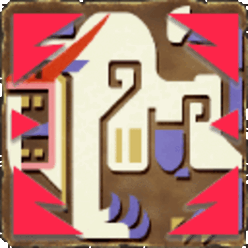
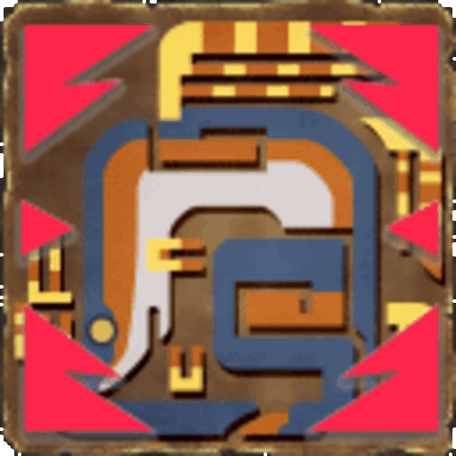
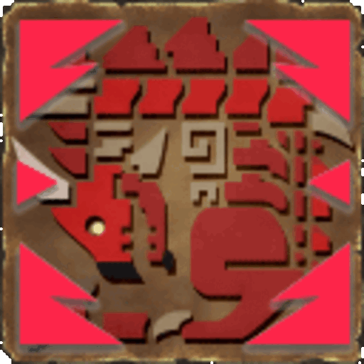

SnS Master Guide
SnS Master Guide
About the Run:
The SnS (Sword & Shield) Master achievement is a challenge on the MezeLounge server. This guide will walk you through the essentials of achieving this feat including optimal gear setups, strategic monster selections, and tips/tricks. Upon completing the challenge, the following reward will be granted:
Note: This guide is based on my own experience completing the run. It is not absolute and is subject to any change or adaptation you or your team prefers to make. - Blaze
Criteria :
- Achieve the required floors with a team all equipped with Sword and Shield
- 1 & 2 Player Groups need to reach floor 60
- 3 Player Groups need to reach floor 80
- 4 Player Groups need to reach floor 100
Length of the Run:
| Entry | Run Time | Party Size | Run Link |
|---|---|---|---|
| SnS Run #1 | 6:00:03 | 4 Players | SnS Master Run #1 |
| SnS Run #2 | 4:23:43 | 4 Players | SnS Master Run #2 |
| SnS Run #3 | 4:36:46 | 4 Players | SnS Master Run #3 |
Recommended Party Size:
The Sword and Shield achievement run is heavily built around the use of Crowd Control (Paralysis) and the ability to lock down monsters. For this challenge, I recommend a group size of 4 players for max efficiency.
Team Composition
With 4 Sword and Shield users in the group, I recommend the following setups for compositions:
- 1 Full Support, 1 Pseudo Support/DPS, and 2 Full DPS
- 1 Full Support and 3 Pseudo Supports
The ease of access to party-wide healing makes SnS a special case regarding optimization. It will not be a huge loss to include All Res +20 into a standard DPS set, allowing for the user to take Wide Area guild food (thus becoming pseudo support). This will provide extra safety for all team members. All members are not required to do this but I highly recommend taking at least one Pseudo Support set to assist the Full Support player.
Set Building and Optimization
Weapon Choices
Recommended Sword & Shield: The Divine Galatine is highly recommended for this achievement. This weapon provides a high output of paralysis which, when used in conjunction with multiple players, can trivialize a large percentage of zeniths.
Weapon Outlier: If your team has an Enraptured Sword Rapsodie available, this weapon can substitute for one spot of Divine Galatine. It provides a high DPS output far above the Galatine and can be a useful addition as three Divine Galatine will have more than enough paralysis (mainly applicable during Active Feature). Feel free to test around and see what works.
Buffs and Enhancements: Prioritize buffs that boost your weapon's status output for this challenge. Crowd control is key, and maxing your status output for this challenge is crucial.
Armor Sets
Here are some recommended armor sets for the SnS Master achievement run:
- Set 1: Support-Focused - This set is designed for a player who will provide buffs and focus on control/support for the team. Only one player should run this set to maximize team efficiency.
- Set 2: Pseudo-Support - These sets are designed for a player that will fulfill all three roles (damage/control/support) for the team. You can have up to three players in this position to assist the full support; however, only one is needed for optimal play.
- Set 3: Full DPS - This set is designed for a player that will fulfill the primary role of DPS. It has no support elements and will rely on the Support/Pseudo support for buffs/healing. However, as this is SnS, you still have easy access to Lifepowders for quick moment healing.
Recommended Sigils
For this run, I recommend the same sigils for all roles:
- SnS Up +15
- Status Attack
- SnS (Beam Slash)

A Zenith AoE sigil with:
- Element + x
- Element + x
- Status

External Buffs
- Full Support
- Guild Poogie: Poogie Status Attack
- Guild Food: Wide Area +3
- SR: Def +180/All Res +20
- Pseudo Support
- Guild Poogie: Poogie Status Attack/Poogie Defense
- Guild Food: Wide Area +3
- SR: Def +180/All Res +20
- Full DPS
- Guild Poogie: Poogie Status Attack/Poogie Defense (Poogie Taijutsu if running Starving Wolf+2)
- Guild Food: All Res +20
- SR: Def +180/All Res +20
Recommended Road Skills
Zenith Sigils & Transcendence
For this run, it is essential to understand the importance of Zenith AoE sigils and Transcendence
Zenith SigilsAs a baseline rule for this run, practice the following:
- Designate/Coordinate 2 groups of 2, to utilize Zenith Sigils on rotation.
- Two Zenith AoE sigils (With Status + Element) will be used every Zenith
- Timing for the use of sigils may vary. For safety, you can choose to place it upon the first Paralysis on a monster. Refer to the run links for specific timings.
Utilizing Hexaflash Effects
With the innate ability of the SnS Tech skill, you have the ability to utilize any elemental Sword Crystal (equipped with R2 + R3). If these crystals are active during transcendence, it will alter your Hexaflash effect to the element matching the chosen crystal. This can be incredibly useful for utility.
On this run, there are primarily 3 Hexaflash effects that will be utilized:
- Ice Hexaflash - Freezes Monsters in place for an extended period of time. Paralysis and Stun value cannot be accumulated during this effect; however, part break damage is still accounted for. It is important to time it well so that it does not interfere with a paralysis or stun chain.
- Dragon Hexaflash - Instantly stuns a monster (no matter the current stun threshold, it can be 0/800, and still stun) and continues to accumulate stun over time. Depending on the monster's threshold, this hexaflash has the potential to stun a monster twice over its duration. (Even if not exactly enough for a second stun, you can remedy this by utilizing the SnS shield bash)
- Fire Hexaflash - Inflicts fire damage and causes a monster to periodically flinch for its duration. This is essential on this run for Zenith Espinas. On each flinch, it will drop an anti-venom. Try to always utilize at least 2 Fire Hexaflash's against Espinas.
✽Note: You do not need Fire Crystals to use Fire Hexaflash. Divine Galatine has a priority on its dual element (Light) to always have its Hexaflash effect be Fire.
Further details regarding Hexaflash are below in the Monster Picks/Choices section. That being said, explore your options, and always feel free to try new strategies!
In-depth details are available via the Hexaflash Data page.
Best Monster Picks and Choices
The following list/descriptions are based on my own opinion of the following factors:
- How fast the monster takes on average to kill
- The difficulty of execution for a successful kill
- The danger level of the monster (factors in the rise of floor scaling)
S Tier
 Daimyo Hermitaur: Very weak to Fire/Thunder, is easily locked into paralysis chaining and dies fast. Does not provide much danger as he should never reach his 2nd phase against this composition. Fight Example
Daimyo Hermitaur: Very weak to Fire/Thunder, is easily locked into paralysis chaining and dies fast. Does not provide much danger as he should never reach his 2nd phase against this composition. Fight Example Giaorugu: Weak to Fire/Thunder, can be stagger/animation locked due to his HP-Based moves essentially rendering him immobile following the first Paralysis. However, he can be dangerous in the start of the fight. Once acquired, always use an anti-venom on entry. Fight Example
Giaorugu: Weak to Fire/Thunder, can be stagger/animation locked due to his HP-Based moves essentially rendering him immobile following the first Paralysis. However, he can be dangerous in the start of the fight. Once acquired, always use an anti-venom on entry. Fight Example Hypnoc: Weak to Fire/Thunder, a solid pick as it proposes almost no danger to this composition, is controlled quickly, and dies quickly. Fight Example
Hypnoc: Weak to Fire/Thunder, a solid pick as it proposes almost no danger to this composition, is controlled quickly, and dies quickly. Fight Example Bogabadorumu: Always a solid pick, can be control-chained by utilizing pitfall traps before his Zenith phase. An ideal chain would be Para -> Pitfall -> Para -> Pitfall -> Para; this can also become a variant by utilizing SnS shield bash for KO instead. Fight Example
Bogabadorumu: Always a solid pick, can be control-chained by utilizing pitfall traps before his Zenith phase. An ideal chain would be Para -> Pitfall -> Para -> Pitfall -> Para; this can also become a variant by utilizing SnS shield bash for KO instead. Fight Example Tigrex: Very safe pick, with multiple people available to heal attacks/through the bleed grab, danger becomes minimal. Easily locked into paralysis chaining. Fight Example
Tigrex: Very safe pick, with multiple people available to heal attacks/through the bleed grab, danger becomes minimal. Easily locked into paralysis chaining. Fight Example-  Blangonga: Not too much to say here. Blangonga has a very low HP value, is weak to both fire/thunder, SnS can match his speed easily, and is overall just a very very good pick. Fight Example
 Hyujikiki: Hyuji is a pick that may not make much sense at first, but is easily a top pick. Paralysis lasts 10 seconds on him, he is weak to both Fire/Thunder, and easily gets chained into 2-3 paralysis, usually skipping his needle-one shot animation consistently. Fight Example
Hyujikiki: Hyuji is a pick that may not make much sense at first, but is easily a top pick. Paralysis lasts 10 seconds on him, he is weak to both Fire/Thunder, and easily gets chained into 2-3 paralysis, usually skipping his needle-one shot animation consistently. Fight Example Espinas: Essential pick on the run. For the first half of the run, I recommend always picking Espinas if you can. The access to early Anti-Venoms is highly beneficial and will immensely increase safety on the run. While it's one of the safest picks once venoms are obtained, if you want to save time later in the run, feel free to pick other S tier options over Espi such as Crab, Blango, or Hyuji. Fight Example
Espinas: Essential pick on the run. For the first half of the run, I recommend always picking Espinas if you can. The access to early Anti-Venoms is highly beneficial and will immensely increase safety on the run. While it's one of the safest picks once venoms are obtained, if you want to save time later in the run, feel free to pick other S tier options over Espi such as Crab, Blango, or Hyuji. Fight Example
A Tier
 Khezu: No extensive opinion is held for the Khezu fight. Overall, has one risky one-shot (vore grab). Avoid this move at all costs and it should be taken down with ease. Can be a lengthy fight depending on positioning and how you respond to a particular attack. Fight Example
Khezu: No extensive opinion is held for the Khezu fight. Overall, has one risky one-shot (vore grab). Avoid this move at all costs and it should be taken down with ease. Can be a lengthy fight depending on positioning and how you respond to a particular attack. Fight Example-  Plesioth: Plesioth places high on this list as 4 SnS has an absurd amount of elemental damage. The high amount of Fire/Thunder damage can knock Plesioth out of his Water Phase very quickly, forcing him into an idle animation that proposes no danger. This composition also has the luxury of quick on-use sonic bombs available due to unsheathed item use, which reduces the danger of bubbles heavily. In general, Hexaflash is not needed here. However, feel free to use any, even just having Light Transcendence activated is potent enough to keep him out of his water phase. Fight Example
-  Rathalos: Nothing noteworthy here. Low risk pick, is resistant to fire however offers little to no danger against this composition. Fight Example
B Tier
 Akura Vashimu: In this composition, Akura poses nearly no threat to the hunters. With multiple healing sources available, his pin attack can easily be saved from, and sonic bombs can easily be used to clear crystals/crystallization. His placement in B Tier is solely due to his high elemental resistance and how long he takes to kill. If time is not a factor, this is an extremely solid pick. Be wary of the underground grab attack (unsaveable). Fight Example
Akura Vashimu: In this composition, Akura poses nearly no threat to the hunters. With multiple healing sources available, his pin attack can easily be saved from, and sonic bombs can easily be used to clear crystals/crystallization. His placement in B Tier is solely due to his high elemental resistance and how long he takes to kill. If time is not a factor, this is an extremely solid pick. Be wary of the underground grab attack (unsaveable). Fight Example Gravios: A decent choice that can be optimally picked over those in C Tier and below. The danger of Gravios will come from the beginning of the fight, however from the first paralysis onwards, it can be pretty simple. Utilize Ice Hexaflash, and prioritize hitting the Z Part (Chest) to break it as soon as possible. Keep anti-venom active on the fight.
Gravios: A decent choice that can be optimally picked over those in C Tier and below. The danger of Gravios will come from the beginning of the fight, however from the first paralysis onwards, it can be pretty simple. Utilize Ice Hexaflash, and prioritize hitting the Z Part (Chest) to break it as soon as possible. Keep anti-venom active on the fight.
 Midogaron: Mido is in a weird spot. With an extremely high damage/danger threshold but also the potential to be a fast pick if control-chained properly. The main reason for being B tier comes from his extremely high damage on higher floors, with nearly every move having potential to kill through Anti-Venom. However, he can be chained properly by utilizing Ice/Dragon Hexaflash following a paralysis. Fight Example
Midogaron: Mido is in a weird spot. With an extremely high damage/danger threshold but also the potential to be a fast pick if control-chained properly. The main reason for being B tier comes from his extremely high damage on higher floors, with nearly every move having potential to kill through Anti-Venom. However, he can be chained properly by utilizing Ice/Dragon Hexaflash following a paralysis. Fight Example
C Tier
 Toridcless: Personally not one of my favorite picks, but can still be okay if executed correctly. I recommend utilizing Dragon Hexaflash (through Dragon Crystals) on Torid. Stun lasts for 10 seconds on him, and allows for further ramp-up of Paralysis. This provides an opening to chain control him. Outside of this, his damage on high floors is extremely dangerous even through Anti-Venom, be wary of this pick. Fight Example
Toridcless: Personally not one of my favorite picks, but can still be okay if executed correctly. I recommend utilizing Dragon Hexaflash (through Dragon Crystals) on Torid. Stun lasts for 10 seconds on him, and allows for further ramp-up of Paralysis. This provides an opening to chain control him. Outside of this, his damage on high floors is extremely dangerous even through Anti-Venom, be wary of this pick. Fight Example Doragyurosu: One of the rare cases where I won't say Dora is an optimal pick. With his paralysis immunity and high danger factor on mistakes, it can be a risky pick if not well trained or prepared on his moveset. One upside is that his launcher attack can always be saved from on this composition. However, be aware of the beam attacks, as they have the ability to one-shot through Anti-Venom. I recommend utilizing Ice Hexaflash, and attempt to break the Horn as soon as possible. Fight Example
Doragyurosu: One of the rare cases where I won't say Dora is an optimal pick. With his paralysis immunity and high danger factor on mistakes, it can be a risky pick if not well trained or prepared on his moveset. One upside is that his launcher attack can always be saved from on this composition. However, be aware of the beam attacks, as they have the ability to one-shot through Anti-Venom. I recommend utilizing Ice Hexaflash, and attempt to break the Horn as soon as possible. Fight Example Baruragaru: Similar to Dora, Baru is immune to Paralysis and isn't one of the best picks. If you decide to pick him, always keep Anti-Venom active and utilize Dragon Hexaflash for a source of control. Additionally, remind each team member to buy Armor Pills for Defense Down removal, as they do not function with Wide-Area. Fight Example
Baruragaru: Similar to Dora, Baru is immune to Paralysis and isn't one of the best picks. If you decide to pick him, always keep Anti-Venom active and utilize Dragon Hexaflash for a source of control. Additionally, remind each team member to buy Armor Pills for Defense Down removal, as they do not function with Wide-Area. Fight Example
F Tier
 Harudomerugu: A 50/50 pick in terms of danger. Most dangerous in the beginning of the fight, but becomes less as he gets animation locked through chaining his HP-Based moves. To minimize risk in this fight, aim to use Dragon Hexaflash as soon as possible. An ideal starting chain can be Para -> Hexa -> Para, aim to focus and break the head as soon as possible. All of his wind-up "one-shots'' are saveable consistently aside from the Machine Gun, which will require specific timing. Always keep anti-venom active in this fight. Fight Example
Harudomerugu: A 50/50 pick in terms of danger. Most dangerous in the beginning of the fight, but becomes less as he gets animation locked through chaining his HP-Based moves. To minimize risk in this fight, aim to use Dragon Hexaflash as soon as possible. An ideal starting chain can be Para -> Hexa -> Para, aim to focus and break the head as soon as possible. All of his wind-up "one-shots'' are saveable consistently aside from the Machine Gun, which will require specific timing. Always keep anti-venom active in this fight. Fight Example Rukodiora: Preferably, avoid at all costs. Has a high danger factor due to many one-shot attacks, a bad paralysis animation, and high HP. If you must pick him, I recommend utilizing Ice or Dragon Hexaflash for a source of control. Fight Example
Rukodiora: Preferably, avoid at all costs. Has a high danger factor due to many one-shot attacks, a bad paralysis animation, and high HP. If you must pick him, I recommend utilizing Ice or Dragon Hexaflash for a source of control. Fight Example Gasurabazura: Preferably, avoid at all costs. I don't recommend ever picking this, as I believe all other options to be better. Extremely dangerous.
Gasurabazura: Preferably, avoid at all costs. I don't recommend ever picking this, as I believe all other options to be better. Extremely dangerous.
Credits
✽ Special thanks to Flame, Kasumi, ZeroArcadia, Pitou, and Sera for discussing/reviewing the guide!